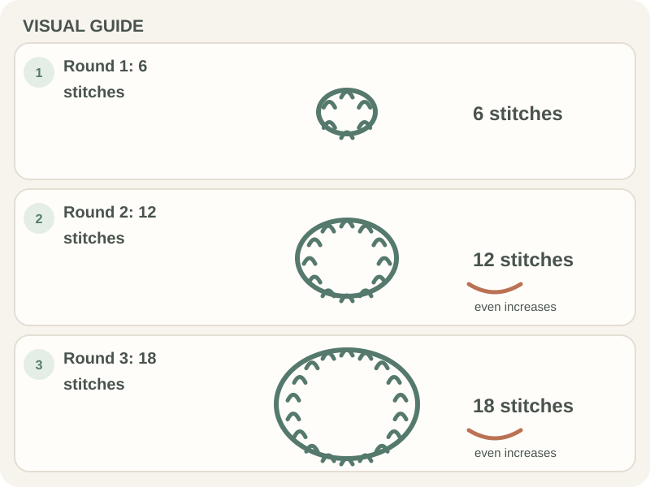

Beginner Projects · Beginner guide
How to Crochet a Beginner-Friendly Coaster
A simple coaster can be a small square or circle; cotton and a stable stitch help it hold its shape.

If you make a circle, increases spread the fabric outward. The number of increases depends on stitch height and tension, so follow a pattern or check the shape often.
Before you begin
Choose yarn and care instructions for the coaster’s intended use. Keep a stitch marker for the round start and a ruler for checking diameter.
Step-by-step instructions
This small US single-crochet circle grows by six stitches per round. Use the marker to find the round start.
- Make a magic ring, chain 1, and work 6 single crochets into the ring. Join with a slip stitch to the first single crochet; tighten the ring.

Real crochet photograph by Miriam Alonso via Pexels. - Round 2: chain 1 (does not count), work 2 single crochets in each stitch, and join (12 stitches).
- Round 3: chain 1, then repeat single crochet in the next stitch and 2 single crochets in the following stitch around; join (18 stitches).
- Round 4: chain 1 (does not count), then repeat single crochet in the next 2 stitches and 2 single crochets in the following stitch around; join (24 stitches). For each later round, add one more single crochet between increases, repeat that sequence six times, and join. This is a common joined single-crochet circle; yarn and tension can affect how flat it lies, so stop and check after each round. When the coaster reaches the diameter you want, join the round, fasten off, and weave in the tail.

How to check your work
A flat coaster should rest on a surface without cupping or rippling. If the round curls, compare increase counts; if it waves, check for extra increases.
Common beginner problems
- The circle cups like a bowl: There may not be enough increases for your stitch or tension; follow the pattern count before changing hook size.
- The edge waves: There may be too many increases. Count the round and compare with the pattern.
- The coaster is too small: Measure after a few rounds and continue evenly, keeping the pattern repeat.
Keeping a circle flat
Increase evenly around the round as the pattern directs. A single increase schedule does not fit every yarn, stitch, or tension, so use the pattern’s count and check the fabric as it grows.
Frequently asked questions
What yarn is suitable for a coaster?
Choose a yarn whose care and heat tolerance suit how you plan to use it; check the label.
Why is my crochet circle curling?
Check the increase count and tension against the pattern.
How wide should a coaster be?
Measure an existing coaster or choose a diameter that suits your cup and surface.